|
|
Экспонирующие камеры, оборудование
|
Экспонирующая камера Soligor
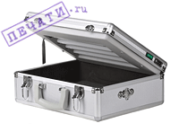Модели экспонирующих камер серии Soligor имеют элегантный, компактный корпус в виде чемоданчика. Кроме отличного внешнего вида, малого веса и габаритов у данной модели экспокамер имеется еще одно преимущество - удобство пользования за счёт полного открытия крышки, что особо важно при проведении окончательной упрочняющей обработки (дубления).
подробнее »
| Модель |
Стоимость |
| Soligor E-45 |
6490 |
| Soligor E-60 |
7990 |
| Soligor E-90 |
9990 |
|
 |
Экспонирующая камера PLC-60
 Представляем вам новую версию хорошо зарекомендовавшей себя в прошлый кризис серии моделей PLС. Однако прогресс не стоит на месте и сегодня мы кардинально переработали её. Новый абсолютно жесткий корпус из современного композитного материала - металлизированного пластика, который не боится нагрева или падения. Учтены технологические особенности, связанные с прогревом рабочего объёма и изменение времени засветки. Был установлен вентилятор и по-этому температура внутри камеры всегда стабильна вне зависимости от времени эксплуатации. Представляем вам новую версию хорошо зарекомендовавшей себя в прошлый кризис серии моделей PLС. Однако прогресс не стоит на месте и сегодня мы кардинально переработали её. Новый абсолютно жесткий корпус из современного композитного материала - металлизированного пластика, который не боится нагрева или падения. Учтены технологические особенности, связанные с прогревом рабочего объёма и изменение времени засветки. Был установлен вентилятор и по-этому температура внутри камеры всегда стабильна вне зависимости от времени эксплуатации.
Выдвижной ящик имеет как упор ограничивающий выдвижение, так и ограничитель чтобы ящик не наклонялся при вытаскивании, четко вымеренное расстояние между лампами и их правильное позиционирование над стеклами позволяет правильно и равномерно засвечивать полимер. Проверенный таймер так же элемент привычного комфорта и стабильности работы. Как приятный элемент общения с прибором, добавлена такая мелочь, как регулируемые по высоте ножки.
В рамках гарантийных обязательств предусмотрена возможность предоставления подменной камера на время ремонта, если ваша по какой-то причине сломалась. Гарантия на камеру 1 год. На лампы 6 месяцев.
| Модель |
Стоимость |
| PLC-60 |
8000 |
|
|
|
|
|
|
Что такое экспонирующая камера? Знатоки в области штемпельной продукции, конечно, могут пропустить этот абзац, а всем остальным советуем читать внимательно. Так называется особый аппарат, играющий главную роль в процессе производства штампов. Экспокамера оснащена таймером и ультрафиолетовыми лампами, которые позволяют воплощать в жизнь фотополимерную технологию. Она заключается в послойном отверждении полимера под действием UV-излучения.
Интернет пестрит советами о том, как соорудить экспонирующие камеры для печатей своими руками. Излишне даже говорить о том, что это не самая лучшая идея, но мы все-таки скажем: вряд ли вам удастся добиться того хваленого немецкого качества, которым славится продукция фирмы Soligor. Поэтому лучше не экономить и обратиться в компанию Печати.RU. Проще купить одну из камер в нашем каталоге, чем дни напролет возиться с материалами для ее сборки на дому, растрачивая свое время и нервные клетки.
Техника от Печати.RU, благодаря своему оснащению и конструкции, идеально подойдет как начинающим, так и «продвинутым» пользователям. Кроме того, у нас вы можете приобрести такое оборудование для изготовления печатей, как автоматические мойки, лампы для экспокамер, а также расходные материалы. И, наконец, мы сделаем вам выгодное предложение: бесплатный софт, необходимый для производства высококачественных оттисков.
|
|
|
Автоматические мойки U-4, U-6
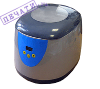Одним из главных недостаткив наиболее распространённой на сегодняшний день фотополимерной технологии изготовления печатей является необходимость промывать клише будущей печати в воде.
Компания "Печати.ru" предлагает новинку на этом рынке - автоматические мойки, которые призваны в существенной мере упростить и автоматизировать процесс изготовления печатей.
Автоматические мойки обладают рядом очевидных преимуществ:
Процесс исключает ручной труд
Все элементы клише промываются одинаково хорошо, вне зависимости от их размеров
Клише невозможно испортить (оторвать мелкие элементы)
Отсутствует необходимость в большом количестве проточной воды
Моющий раствор не обязательно менять после каждой промывки (насыщение полимером не влияет на моющие свойства)
К недостаткам автоматических моек можно отнести незначительное увеличение времени промывки клише.
подробнее »
| Модель |
Стоимость |
| Модель U-4 |
3000 |
| Модель U-6 |
4500 |
|
|
Программы для изготовления печатей
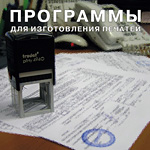Незаменимый мультимедийный помощник для тех, кто начал осваивать процессы изготовления печатей и штампов.
На диске содержится подробная видео-инструкция по изготовлению печатей с использованием фотополимерной технологии.
Для того чтобы изготовить качественное клише, вам предложат подробно, по шагам изучить весь процесс. Кроме того, Вы найдете подробное описание работы в данном графическом редакторе, иллюстрацию по созданию макета печати.
Так же Вам будет полезно ознакомиться с такими программами, как Stampmaker (программа для создания печатей под Windows); STAMP - (программа для создания печатей и штампов, которая создана с функциями позволяющими, размазывать печать); Font Navigator (программа для просмотра и сортировки шрифтов).
Шрифты - необходимы при создании печатей, на диске их содержится около 3000, и мы сами используем их в своей работе.
Вам не обойтись без наборов шаблонов стандартных печатей, окантовок, рамочек и сеток порой необходимых в изготовлении печатей - все это есть на диске.
В дополнение к вышеперечисленному, добавим еще несколько полезных программ, которые не требуют от вас дизайнерских навыков. Они просты в использовании и интуитивно понятны: PECHAT 0.9 (программа для изготовления макетов печатей под DOS), SEAL WIN - программа позволяет создавать на компьютере печати любой формы. LETTERP - программа, содержащая много разделов и образцов писем, от личных до деловых. COPYSHOP - программа, необходимая при копировании документов. LOGOTYP - программа для создания логотипов, и в завершение - VISIT (программа для изготовления визиток).
| Вариант |
Стоимость |
| Программы д/изготовления печатей |
бесплатно |
подробнее »
|
|
|
Лампы для экспонирующих камер
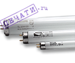
| Вариант |
Стоимость |
| Cleo 15 W; L ~ 315 мм |
500 |
| Cleo 20 W; L~ 430 мм |
600 |
| 20W TL - аналог ЛУФ-40; L ~ 600 мм |
600 |
|
|
Оборудование для изготовления красконаполненных печатей и штампов.
Flash системы (флеш системы)
Флэш-технология - это принципиально новая технология, которую по типу печатающей поверхности можно отнести к разновидности трафаретной печати: пробельные элементы не пропускают краску, печатающие – пропускают. Краска аккумулируется в пористом материале, а не подается извне.Это - новая концепция, которая основывается на двух новых технологических принципах.
Первый - отсутствие рельефа на самой печати, что имеет несомненные преимущества по сравнению с «традиционными» печатями. Минимальный размер точки на рельефной печати ограничен, ввиду того, что тонкие элементы могут просто не выдержать давления при оттиске и разрушиться.
Нерельефная печать таких ограничений не имеет, к тому же она не дает искажения при оттиске.
Второй - изготовление красконаполненных печатей с возможностью получать значительное количество оттисков с одной заправки (5-30 тысяч). Материал, из которого изготавливается клише печати, способен впитывать в себя краску, удерживать и отдавать ее при проставлении оттиска. Количество заправок не ограничено.
Флэш-технология позволяет получать высококачественные многоцветные печати (до шести цветов одновременно) с микротекстом типа «белый текст на черном фоне» или «черный текст на белом фоне» с размером букв от 0.5 до 0.8 мм, с полутоновым растром и тонкими линиями до 0,08 мм, сетками и фотографиями. Все перечисленное выше становится весьма актуальным в связи с возрастающими требованиями к защищенности печатей от подделок. Предлагаемая технология отвечает всем требованиям настоящего японского качества и позволяет реализовывать разнообразные приемы защиты от подделки.
Печати из красконаполненной резины имеют ряд преимуществ по сравнению с традиционными фотополимернами или резиновыми печатями:
- высокая разрешающая способность (до 2500 dpi/ 200lpi)
- печать заправлена краской и не требует штемпельной подушки.
- печать не имеет рельефа и практически не подвержена износу.
- оттиск не смывается водой
- проставляются абсолютно бесшумно
- до 10.000 оттисков без дозаправки сменной подушечки (для обычной автоматической оснастки с фотополимерной или резиновой печатью едва хватает на 3 тысячи оттисков.)
- заправка бесцветными чернилами (видимых только в УФ лучах)
- заправка специальными чернилами для работы по стеклу, металлу, пластику, фото
- широкая гамма полутонов растровая графика
- возможность изготовления многоцветных печатей
- изготовление гербовых печатей по ГОСТ Р 51511-2001
На сегодняшний день себестоимость красконаполненной печати сопоставима с полимерной печатью на автоматической оснастке.
Флэш-Технология и микропористые материалы позволяют получать печати с высоким разрешением до 2540 dpi и линеатурой до 205 lpi, что соответствует требованиям ГОСТ Р 51511-2001 на гербовые и удостоверительные печати.
Цены указаны в рублях!
|
Fly - 3
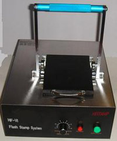Технические характеристики:
площадь засветки 140 х 80 мм
2 лампы
мощность вспышки 1180 джоулей
габариты 400 х 300 х 140 мм
вес 8 кг
Цена 27 000 руб
|
|
Флэш система MS-1100 производства японской формы Sun Stamper
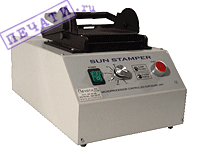Флэш система MS-1100 предназначена для изготовления печатей из красконаполненной резины и отличается от предыдущих моделей (JR-03,04,05) большим размером рабочего поля, сокращённым циклом и увеличенным ресурсом работы ламп вспышки.
| Вариант |
Стоимость |
| Флэш система MS-1100 |
54000 |
подробнее »
|
Оснастка для красконаполненных печатей
|
Royal Mark
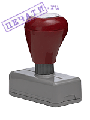
| Вариант |
Стоимость |
| M-04 11x36 mm |
250 |
| M-06 11x58 mm |
250 |
| M-10 17x52 mm |
250 |
| M-16 27x46 mm |
300 |
| M-18 27x75 mm |
350 |
| M-24 37x72 mm |
350 |
| M-28 44x44 mm |
350 |
| M-32 58x77 mm |
500 |
|
|
Ultimark
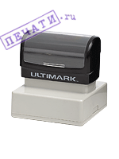
| Вариант |
Стоимость |
| U-02 10x37 mm |
200 |
| U-05 16x48 mm |
250 |
| U-10 22x60 mm |
300 |
| U-16 29x48 mm |
300 |
| U-24 35x73 mm |
350 |
| U-28 48x48 mm |
400 |
| U-30 48x99 mm |
500 |
| U-32 61x73 mm |
500 |
| U-34 73x99 mm |
800 |
| U-R45 d=43 mm |
350 |
|
|
|
Wood
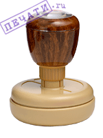
| Вариант |
Стоимость |
| SC1 W 18x45 mm |
200 |
| SC2 W 18x63 mm |
200 |
| SN2 W 25x61 mm |
250 |
| SB2 W 30x50 mm |
250 |
| SW2 W 43x53 mm |
300 |
| SSP W 52x82 mm |
400 |
| SR2 W d=20 mm |
150 |
| SR3 W d=32 mm |
250 |
| SR5 W d=40 mm |
250 |
| SR6 W d=42 mm |
250 |
|
|
Оснастка металлическая RGM
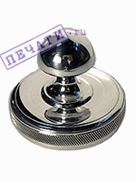
| Вариант |
Стоимость |
| RGM-3834 d=38 mm |
300 |
|
|
|
Оснастка металлическая RMMP
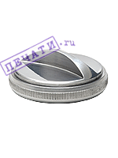
| Вариант |
Стоимость |
| RGMP-3834 d=38 mm |
300 |
| RMMP-4524 d=45 mm |
350 |
|
|
Стандартная пластмассовая оснастка, d=40 мм
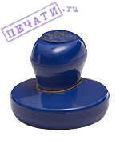
| Вариант |
Стоимость |
| RVP-4024 |
150 |
| RVP-4020/2 (два круга, два цвета) |
150 |
| RVP-4024/3 (три круга, три цвета) |
150 |
| RVP-4024/1-3 (один круг, два сектора, три цвета) |
150 |
|
|
|
Карманная пластмассовая оснастка, d=38 mm
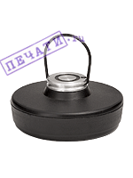
| Вариант |
Стоимость |
| RTPK-3824 |
150 |
|
|
Оснастка серии РФ, с российским гербом
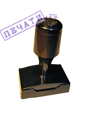
| Вариант |
Стоимость |
| 37x20 mm |
125 |
| 45x24 mm |
135 |
| 56x36 mm |
150 |
| 52x29 mm |
170 |
| 66x21 mm |
180 |
| 66x46 mm |
190 |
|
|
|
Оснастка серии ФК, карманная
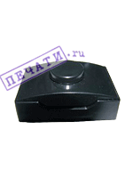
| Вариант |
Стоимость |
| 37x20 mm |
125 |
| 45x24 mm |
135 |
| 56x36 mm |
150 |
| 52x29 mm |
170 |
| 66x21 mm |
180 |
| 66x46 mm |
190 |
|
|
|
Оснастки имеют цвета: серый, черный, синий, бордовый.
|
|